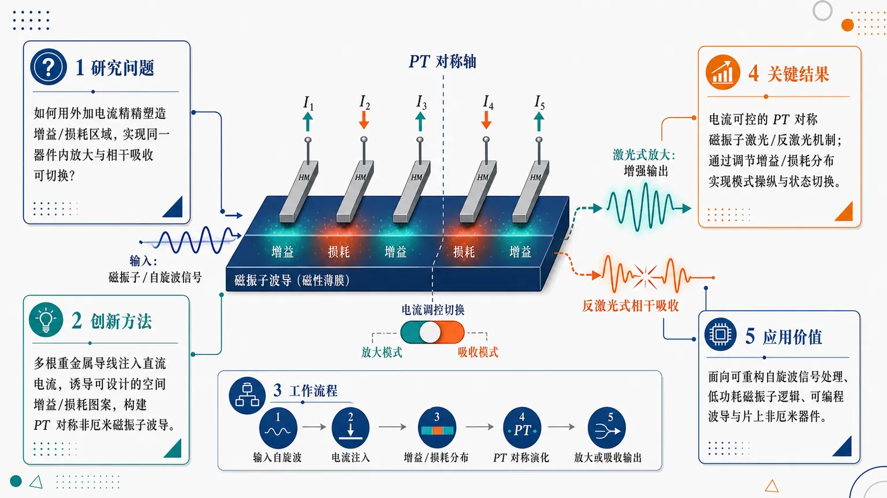
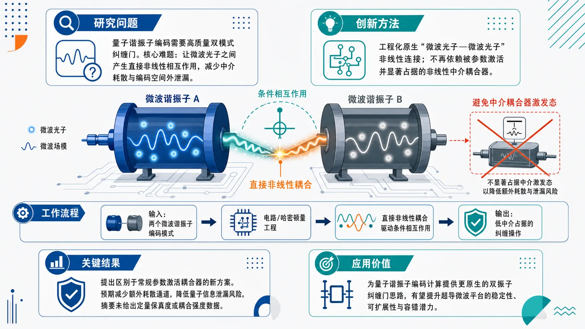
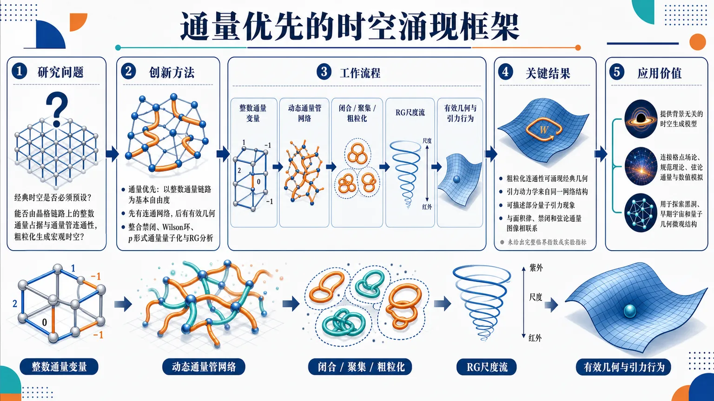
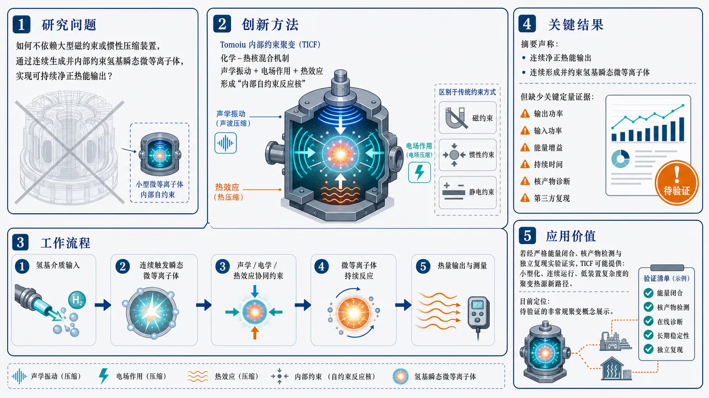
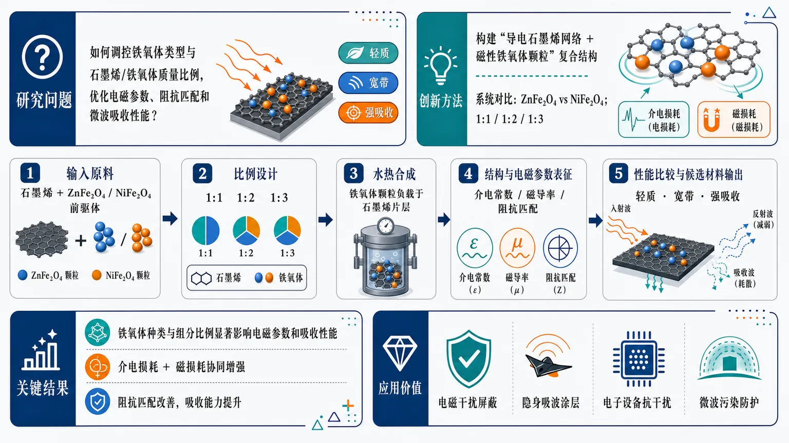

AI × Science 文献日报 2026/07/06
聚焦 AI × 物理 / 化学 / 材料交叉方向，自动过滤明显偏题的医学、教育与社会科学内容，并按主题重新排版，便于快速深读。
AI | 物理 | 化学 | 材料 | 交叉学科
原始候选 33 篇中，已剔除 0 篇明显偏离主线的内容，并从剩余 33 篇主线相关文献中精选 22 篇进入日报页，优先保留 AI × 物理 / 化学 / 材料交叉与关键计算方法工作。
核心关注（ML × ferro / 凝聚态）
8 篇本日进展不再只停留在用 equivariant GNN、MACE、NEP 拟合 NbOI2、CrI3、CrSBr、BaTiO3 等铁电/磁性材料势能面，而是把 ML 推到量子求解器初始化、量子点 CSD 重建和熔盐输运替代计算。GNN 编码 VQE 与条件扩散模型分别针对哈密顿量基态重叠和稀疏量测成像，体现 ML 在凝聚态实验与量子算法前端控制中的价值。材料侧，SrRuO3 单层八重各向异性、面外 Ruddlesden–Popper 铁电响应、交替磁自旋分裂和 PT 对称磁振子器件给 ML 筛选目标给出清晰物理标签。DFT+U、spin-spiral DFT 与 MACE/NEP 主动学习可围绕这些标签构建可验证数据集。
-
01图神经编码提升量子本征求解器泛化Improving generalization and trainability of quantum eigensolvers via graph neural encoding
📄 摘要：面向多体哈密顿量基态制备，采用图神经网络为变分量子本征求解器生成或编码初态与线路信息，缓解标准 VQE 在大体系中训练困难、泛化弱和对初态重叠要求高的问题。目标是提高量子相位估计、量子子空间方法等后续算法所需的基态重叠。
💡 亮点：图神经编码把哈密顿量结构直接注入 VQE，使初态制备更可训练、更能跨体系泛化。该思路将量子算法瓶颈转化为图表示学习问题，贴近量子多体与组合优化中的可扩展求解需求。
📐 方法要点：用哈密顿量图编码生成 VQE 初态与线路先验。
🔗 相关工作关联：呼应神经量子态、QAOA/VQE warm-start、量子相位估计前处理。
💡 对你方向的启示：把晶格连接、相互作用和对称性显式输入，可提升多体磁模型跨尺寸泛化。
-
02扩散模型重建量子点电荷稳定图Reconstructing quantum dot charge stability diagrams with diffusion models
📄 摘要：针对自旋量子处理器中量子点电荷稳定图获取耗时的问题，训练条件扩散模型从稀疏量测重建完整高分辨 CSD。方法适用于远程传感器无法直接探测目标量子点电荷的架构，评估重点是少量采样下保持占据边界和电荷跃迁结构。
💡 亮点：条件扩散模型把量子点调参从逐点扫描变为稀疏采样后的生成重建。对多量子点阵列和远程电荷传感架构，CSD 获取时间可望成为可学习的主动表征问题。
📐 方法要点：条件扩散模型从稀疏量测补全高分辨电荷稳定图。
🔗 相关工作关联：呼应压缩感知、贝叶斯主动调参、U-Net 图像重建、量子点自动调谐。
💡 对你方向的启示：稀疏扫描到完整相图的范式可迁移到 PFM、MOKE、输运相图加速采样。
-
03量子积木学习：混合人工智能模块化Quantum LEGO Learning: A Modular Design Principle for Hybrid Artificial Intelligence
📄 摘要：提出“量子积木学习”框架，将混合量子–经典学习拆分为可复用的经典块和量子块，显式区分编码、量子处理与读出角色。相较端到端紧耦合训练，该设计意在降低优化难度、减弱噪声敏感性，并减少对特定量子编码器的依赖。
💡 亮点：量子积木学习用模块化替代端到端混合量子模型，将预训练经典模块与量子块解耦。该框架有利于在含噪近中期量子设备上复用量子子程序并比较不同编码策略。
📐 方法要点：将混合量子–经典学习拆成编码、量子处理、读出模块。
🔗 相关工作关联：呼应变分量子线路、量子核方法、data re-uploading、模块化 AutoML。
💡 对你方向的启示：分块评测可隔离量子编码噪声，便于凝聚态分类任务做可复现实验。
-
04机器学习势结合相干模型预测熔盐热导Integration of a Structural Coherence Model with a Semi-Universal Machine Learning Interatomic Potential to Predict Molten Salt Thermal Conductivity
📄 摘要：面向能源系统用熔盐热导率数据库缺口，将结构相干模型与半通用机器学习原子间势结合，替代高成本 Green–Kubo 或非平衡分子动力学计算。目标是在多种熔盐组成上以较低计算量预测热导率并控制不确定度。
💡 亮点：半通用机器学习势与结构相干模型被组合用于熔盐热导率预测，减少传统 MD 热输运计算成本。该路线把原子尺度结构描述与工程热物性数据库补全连接起来。
📐 方法要点：结构相干模型耦合半通用 ML 原子间势预测熔盐热导。
🔗 相关工作关联：呼应 Green–Kubo、非平衡 MD、MACE/NEP/DeepMD 势与不确定度量化。
💡 对你方向的启示：用物理输运代理替代长时 MD，可降低离子液体与高温氧化物数据成本。
-
05交替磁自旋电子学Altermagnetic spintronics
📄 摘要：综述交替磁这一非常规磁有序：其自旋分裂可在零净磁化下出现，并可能支持快速、低串扰的自旋电子器件。文章讨论交替磁与铁电、超导体系的耦合，以及面向可扩展器件的读写、输运和材料实现路径。
💡 亮点：交替磁把反铁磁的零净磁矩与动量依赖自旋分裂结合起来，形成新的自旋输运平台。其与铁电和超导的耦合为可电控、自旋极化和混合量子器件打开材料空间。
📐 方法要点：以对称性和自旋分裂机制梳理交替磁自旋电子学。
🔗 相关工作关联：呼应反铁磁自旋电子学、自旋霍尔效应、非常规磁序、多铁耦合。
💡 对你方向的启示：ML 筛选应加入磁空间群、零净磁化、自旋劈裂和输运可读写标签。
-
06面外 Ruddlesden–Popper 铁电体破缺获益Out-of-plane Ruddlesden–Popper ferroelectrics catch a break
📄 摘要：报道通过破坏 Ruddlesden–Popper 铁电材料的对称性，获得面外介电响应，兼具高可调性和低损耗。该材料设计针对传统层状 RP 体系面外极化受限的问题，强调对可调射频和集成电介质器件的适配。
💡 亮点：对称性破缺使 Ruddlesden–Popper 铁电体获得可用的面外介电调谐，同时保持低损耗。层状氧化物由此更适合片上可调电容、滤波和低功耗射频器件。
📐 方法要点：通过破坏 RP 层状对称性释放面外介电可调响应。
🔗 相关工作关联：呼应杂化非本征铁电、氧化物超晶格、可调 RF 介质、低损耗电介质。
💡 对你方向的启示：材料搜索需显式编码层间错位、反演破缺和面外极化可达性描述符。
-
07PT 对称磁振子激光与反激光PT-Symmetric Magnon Lasing and Antilasing
📄 摘要：提出电可调 PT 对称磁振子激光和反激光机制，器件为磁有序平面波导中的电流偏置区域，并由多根重金属导线施加直流电流。电流产生的增益/损耗分布可调控磁振子模式，实现放大与相干吸收的 PT 对称切换。
💡 亮点：重金属电流偏置在磁性波导中构造可调 PT 对称增益–损耗，实现磁振子激光和反激光。该方案把非厄米物理引入可电控磁振子器件，利于片上自旋波放大与滤波。
📐 方法要点：用电流可调增益/损耗分布实现 PT 对称磁振子激光与反激光。
🔗 相关工作关联：呼应非厄米磁振子学、自旋霍尔转矩、相干完美吸收、磁波导器件。
💡 对你方向的启示：可用 ML 从微磁模拟学习非厄米参数，反向优化电极布局和模式选择。
-
08单层极限 SrRuO3 的金属性与八重磁各向异性Metallicity and eight-fold magnetic anisotropy of SrRuO₃ under the single-layer limit
📄 摘要：研究单层极限 SrRuO3 中二维铁磁金属的稳定性与磁各向异性。结果显示该钙钛矿氧化物在极薄层中仍保持金属性，并出现八重磁各向异性，回应二维铁磁金属中强磁性与清晰各向异性难以兼得的问题。
💡 亮点：SrRuO3 被推进到单层极限后仍呈金属铁磁，并具有八重磁各向异性。该氧化物平台为二维自旋电子学中的可编程磁易轴和各向异性输运提供了具体材料。
📐 方法要点：在单层 SrRuO3 中验证金属性并解析八重磁各向异性。
🔗 相关工作关联：呼应二维铁磁金属、钙钛矿氧化物界面、Ru 4d 关联、DFT+U 各向异性计算。
💡 对你方向的启示：ML 预测二维磁体不能只看磁矩，应联合金属性、SOC 与高阶各向异性。
今日摘要
总览：今日凝聚态与计算材料条目集中在量子算法、机器学习势函数和低维磁电材料：图神经编码被用于提升量子本征求解器的可训练性，扩散生成模型重构量子点电荷稳定图，结构相干模型耦合半通用机器学习原子间势预测熔盐热导率。材料物理侧的主线包括交替磁性自旋电子学、鲁德尔斯登－波普尔层状铁电体的面外极化、单层极限钌酸锶的金属性与八重磁各向异性，以及二维五角双锥硼同素异形体中的超导、磁性和定向等离激元。器件与波动控制条目则覆盖宇称－时间对称磁振子激光与反激光、微波光子直接非线性耦合、石墨烯/锌铁氧体/镍铁氧体复合吸波体。
热点：机器学习嵌入量子与材料模拟 → 用图神经编码、扩散生成模型、模块化量子学习和半通用机器学习原子间势处理量子态、量子点稳定图与熔盐输运 → 典型工作为图神经量子本征求解器、扩散模型量子点电荷图重构、熔盐热导率的结构相干模型。低维磁电与自旋电子学 → 关注交替磁性、面外层状铁电、单层钌酸锶八重磁各向异性和宇称－时间对称磁振子增益/损耗，核心是用晶体对称性与厚度极限调控自旋简并、各向异性和非厄米谱 → 典型工作为交替磁性自旋电子学、单层钌酸锶、磁振子激光与反激光。二维多功能量子材料与电磁响应 → 在五角双锥硼中并置超导、磁性和定向等离激元，在石墨烯/锌铁氧体/镍铁氧体中解析介电损耗、磁损耗与界面极化吸波机制 → 典型工作为二维硼同素异形体和铁氧体复合吸波材料。
今日文献
22 篇 · 16 含图深析-
01
📊 含图深析
📄 摘要：面向多体哈密顿量基态制备，采用图神经网络为变分量子本征求解器生成或编码初态与线路信息，缓解标准 VQE 在大体系中训练困难、泛化弱和对初态重叠要求高的问题。目标是提高量子相位估计、量子子空间方法等后续算法所需的基态重叠。
💡 亮点：图神经编码把哈密顿量结构直接注入 VQE，使初态制备更可训练、更能跨体系泛化。该思路将量子算法瓶颈转化为图表示学习问题，贴近量子多体与组合优化中的可扩展求解需求。
📖 展开分析 + 配图
 研究问题标准变分量子本征求解器在多体哈密顿量基态制备中容易出现优化困难、初态重叠不足和跨体系泛化弱的问题；画面可表现为“复杂哈密顿量网络”进入“崎岖能量地形”，传统 VQE 小车被困在局部谷底，难以到达基态目标。创新方法将多体哈密顿量显式转化为图结构，用图神经网络读取粒子、相互作用和耦合关系，生成或辅助生成 VQE 的初始量子态与变分线路信息；Aha 点是让模型从“哈密顿量图谱”中学习可迁移的基态制备策略，而不是只在单个体系上盲目调参。工作流程输入多体哈密顿量及其相互作用关系；构建节点—边图表示；图神经网络进行消息传递与结构编码；输出初态参数或量子线路辅助信息；送入 VQE 优化得到更高基态重叠的近似基态；该结果继续作为量子相位估计或量子子空间方法的优质输入。关键结果该框架旨在提升 VQE 的可训练性和对更大或不同体系的泛化能力，降低对人工高质量初态的依赖，并提高后续量子算法所需的基态重叠；具体实验体系、数值提升幅度和对比基线在所给内容中未详述。应用价值为量子化学、凝聚态物理和多体量子系统模拟提供更可靠的基态制备入口；可作为 VQE、量子相位估计和量子子空间算法之间的桥梁，使量子算法流水线从“难初始化、难训练”转向“结构感知、可迁移启动”。
研究问题标准变分量子本征求解器在多体哈密顿量基态制备中容易出现优化困难、初态重叠不足和跨体系泛化弱的问题；画面可表现为“复杂哈密顿量网络”进入“崎岖能量地形”，传统 VQE 小车被困在局部谷底，难以到达基态目标。创新方法将多体哈密顿量显式转化为图结构，用图神经网络读取粒子、相互作用和耦合关系，生成或辅助生成 VQE 的初始量子态与变分线路信息；Aha 点是让模型从“哈密顿量图谱”中学习可迁移的基态制备策略，而不是只在单个体系上盲目调参。工作流程输入多体哈密顿量及其相互作用关系；构建节点—边图表示；图神经网络进行消息传递与结构编码；输出初态参数或量子线路辅助信息；送入 VQE 优化得到更高基态重叠的近似基态；该结果继续作为量子相位估计或量子子空间方法的优质输入。关键结果该框架旨在提升 VQE 的可训练性和对更大或不同体系的泛化能力，降低对人工高质量初态的依赖，并提高后续量子算法所需的基态重叠；具体实验体系、数值提升幅度和对比基线在所给内容中未详述。应用价值为量子化学、凝聚态物理和多体量子系统模拟提供更可靠的基态制备入口；可作为 VQE、量子相位估计和量子子空间算法之间的桥梁，使量子算法流水线从“难初始化、难训练”转向“结构感知、可迁移启动”。核心概览
该论文属于量子算法与机器学习交叉方向，研究用图神经网络编码多体哈密顿量结构，为变分量子本征求解器生成初态或线路信息，以提升基态制备的可训练性、泛化能力和后续算法所需的基态重叠。
方法要点
- 将多体哈密顿量相关信息表示为图结构，并用图神经网络进行编码。
- 利用图神经网络为 VQE 生成或辅助编码初始量子态。
- 利用图神经网络提供或优化变分量子线路相关信息。
- 目标是缓解标准 VQE 在大体系中优化困难、泛化能力弱的问题。
- 将改进后的 VQE 输出用于提升量子相位估计、量子子空间方法等后续算法的基态重叠。
关键结果
- 摘要明确指出，该方法旨在改善多体哈密顿量基态制备中的训练困难问题。
- 摘要明确指出，该方法旨在增强 VQE 对更大或不同体系的泛化能力。
- 摘要明确指出，该方法试图降低标准 VQE 对高质量初态重叠的依赖。
- 摘要明确指出，该方法面向提升后续量子算法所需的基态重叠。
- 具体实验体系、性能提升幅度、对比基线和数值结果摘要未详述。
创新性判断
- 可能的新颖点在于用图神经网络显式编码哈密顿量结构，并将其用于 VQE 初态或线路信息生成，而不仅是传统参数优化；这一判断基于摘要，具体实现摘要未详述。
- 相比标准 VQE，该工作可能强调跨体系泛化，即让模型从哈密顿量图结构中学习可迁移的制备策略；但泛化设置和验证范围摘要未详述。
- 该方法的目标不仅是降低 VQE 能量，还关注为量子相位估计、量子子空间方法等后续算法提供高基态重叠输入，体现了面向算法流水线的设计思路。
- 创新程度仍需全文验证，包括是否已有类似 GNN-VQE、神经量子态初始化或线路生成方法，以及本文相对它们的具体差异；摘要未详述。
-
02
📄 摘要：针对自旋量子处理器中量子点电荷稳定图获取耗时的问题，训练条件扩散模型从稀疏量测重建完整高分辨 CSD。方法适用于远程传感器无法直接探测目标量子点电荷的架构，评估重点是少量采样下保持占据边界和电荷跃迁结构。
💡 亮点：条件扩散模型把量子点调参从逐点扫描变为稀疏采样后的生成重建。对多量子点阵列和远程电荷传感架构，CSD 获取时间可望成为可学习的主动表征问题。
📖 展开分析 + 配图
 研究问题自旋量子处理器调参时，传统量子点电荷稳定图需要逐点高密度扫描，耗时巨大；尤其在远程传感器无法直接探测目标量子点电荷的架构中，如何仅用稀疏测量点重建出完整、高分辨率的电荷占据边界和电荷跃迁图案，是本文的核心问题。创新方法论文将条件扩散模型引入量子点电荷稳定图重建：把稀疏采样的测量网格作为条件输入，让扩散生成模型学习完整CSD的结构分布，从噪声中逐步生成清晰的高分辨电荷稳定图；Aha点在于用生成式扩散先验替代传统密集扫描或简单插值，重点保留斜线状占据边界、蜂窝状/分区状电荷跃迁结构。工作流程输入少量栅压扫描得到的稀疏CSD测量点；将稀疏图作为条件信息送入条件扩散模型；模型在迭代去噪过程中补全未测区域；逐步恢复电荷占据区域、边界线和跃迁轨迹；最终输出完整高分辨率量子点电荷稳定图，用于后续器件识别、调参与表征。关键结果条件扩散模型能够从稀疏量测中重建完整高分辨CSD，在少量采样条件下仍以保持占据边界和电荷跃迁结构为目标；该方法被证明适合远程传感器不能直接读取目标量子点电荷的器件场景。摘要未给出具体数值指标、误差下降幅度或基线对比。应用价值该研究可显著减少量子点阵列调参与表征所需的扫描点数和测量时间，帮助自旋量子处理器更快获得电荷状态地图；对大规模量子点器件、远程传感架构和自动化量子芯片调试具有实际价值，可把耗时的二维密集测量转化为少量采样后的智能重建。
研究问题自旋量子处理器调参时，传统量子点电荷稳定图需要逐点高密度扫描，耗时巨大；尤其在远程传感器无法直接探测目标量子点电荷的架构中，如何仅用稀疏测量点重建出完整、高分辨率的电荷占据边界和电荷跃迁图案，是本文的核心问题。创新方法论文将条件扩散模型引入量子点电荷稳定图重建：把稀疏采样的测量网格作为条件输入，让扩散生成模型学习完整CSD的结构分布，从噪声中逐步生成清晰的高分辨电荷稳定图；Aha点在于用生成式扩散先验替代传统密集扫描或简单插值，重点保留斜线状占据边界、蜂窝状/分区状电荷跃迁结构。工作流程输入少量栅压扫描得到的稀疏CSD测量点；将稀疏图作为条件信息送入条件扩散模型；模型在迭代去噪过程中补全未测区域；逐步恢复电荷占据区域、边界线和跃迁轨迹；最终输出完整高分辨率量子点电荷稳定图，用于后续器件识别、调参与表征。关键结果条件扩散模型能够从稀疏量测中重建完整高分辨CSD，在少量采样条件下仍以保持占据边界和电荷跃迁结构为目标；该方法被证明适合远程传感器不能直接读取目标量子点电荷的器件场景。摘要未给出具体数值指标、误差下降幅度或基线对比。应用价值该研究可显著减少量子点阵列调参与表征所需的扫描点数和测量时间，帮助自旋量子处理器更快获得电荷状态地图；对大规模量子点器件、远程传感架构和自动化量子芯片调试具有实际价值，可把耗时的二维密集测量转化为少量采样后的智能重建。核心概览
本文属于量子点表征与机器学习交叉方向，使用条件扩散模型从稀疏量测重建高分辨量子点电荷稳定图（CSD），以减少自旋量子处理器调参与表征中的测量耗时。
方法要点
- 训练条件扩散模型，将稀疏采样的量测数据作为条件输入，生成完整高分辨 CSD。
- 任务目标是重建量子点电荷稳定图中的占据边界与电荷跃迁结构。
- 方法面向远程传感器无法直接探测目标量子点电荷的器件架构。
- 评估重点放在少量采样条件下的重建质量，而非摘要未详述的具体采样比例、网络结构或训练细节。
关键结果
- 条件扩散模型可用于从稀疏量测重建完整高分辨 CSD。
- 该方法被表述为适用于远程传感器无法直接探测目标量子点电荷的架构。
- 在少量采样场景下，方法关注并旨在保持占据边界和电荷跃迁结构。
- 具体定量性能、对比基线、误差指标和实验数据规模摘要未详述。
创新性判断
- 可能的新颖点在于将条件扩散模型用于量子点电荷稳定图的稀疏重建，而非传统逐点高密度扫描；这一判断基于摘要，具体是否首次应用摘要未详述。
- 相比一般图像补全或插值方法，其潜在优势可能在于扩散模型对复杂结构分布的生成建模能力，尤其是保持电荷跃迁边界；但摘要未提供与其他模型的直接比较。
- 面向远程传感器不可直接探测目标量子点的架构，是一个较有应用针对性的设定，可能增强其实用创新性；具体器件类型和验证范围摘要未详述。
-
03
📊 含图深析
📄 摘要：提出“量子积木学习”框架，将混合量子–经典学习拆分为可复用的经典块和量子块，显式区分编码、量子处理与读出角色。相较端到端紧耦合训练，该设计意在降低优化难度、减弱噪声敏感性，并减少对特定量子编码器的依赖。
💡 亮点：量子积木学习用模块化替代端到端混合量子模型，将预训练经典模块与量子块解耦。该框架有利于在含噪近中期量子设备上复用量子子程序并比较不同编码策略。
📖 展开分析 + 配图
 研究问题混合量子–经典人工智能模型常被端到端紧耦合设计绑定：数据编码、量子线路处理、经典读出相互依赖，导致训练优化困难、对量子噪声敏感，并且过度依赖某一种量子编码器，限制模型复用、迁移和组合扩展。创新方法提出“量子积木学习”框架，把混合量子–经典学习系统拆成可替换、可复用的模块化积木：经典块负责数据预处理与读出，量子块负责量子态编码和量子处理；核心 Aha 点是将编码、量子处理、结果读出三种功能显式解耦，用积木拼装替代端到端黑箱耦合。工作流程输入经典数据后，先进入可选经典预处理模块；随后由数据编码模块把信息映射到量子态；量子处理模块执行参数化量子操作；测量结果进入经典读出模块；最终输出预测或决策。各模块像积木一样可单独训练、替换、复用和重新组合。关键结果论文主要给出概念性框架而非明确实验指标：量子积木学习被描述为可降低混合量子–经典模型的优化难度，减少训练过程中的模块间牵制；可能增强对量子噪声的鲁棒性；并降低系统对特定量子编码器或固定量子线路结构的依赖。应用价值该框架为量子机器学习系统提供更清晰的工程化设计原则：研究者可像搭建积木一样组合经典模块和量子模块，便于快速原型开发、模块复用、故障替换、跨任务迁移，并为未来噪声中等规模量子设备上的混合人工智能应用提供更灵活的架构基础。
研究问题混合量子–经典人工智能模型常被端到端紧耦合设计绑定：数据编码、量子线路处理、经典读出相互依赖，导致训练优化困难、对量子噪声敏感，并且过度依赖某一种量子编码器，限制模型复用、迁移和组合扩展。创新方法提出“量子积木学习”框架，把混合量子–经典学习系统拆成可替换、可复用的模块化积木：经典块负责数据预处理与读出，量子块负责量子态编码和量子处理；核心 Aha 点是将编码、量子处理、结果读出三种功能显式解耦，用积木拼装替代端到端黑箱耦合。工作流程输入经典数据后，先进入可选经典预处理模块；随后由数据编码模块把信息映射到量子态；量子处理模块执行参数化量子操作；测量结果进入经典读出模块；最终输出预测或决策。各模块像积木一样可单独训练、替换、复用和重新组合。关键结果论文主要给出概念性框架而非明确实验指标：量子积木学习被描述为可降低混合量子–经典模型的优化难度，减少训练过程中的模块间牵制；可能增强对量子噪声的鲁棒性；并降低系统对特定量子编码器或固定量子线路结构的依赖。应用价值该框架为量子机器学习系统提供更清晰的工程化设计原则：研究者可像搭建积木一样组合经典模块和量子模块，便于快速原型开发、模块复用、故障替换、跨任务迁移，并为未来噪声中等规模量子设备上的混合人工智能应用提供更灵活的架构基础。核心概览
本文提出“量子积木学习”框架，属于混合量子–经典人工智能/量子机器学习方向，主张将系统模块化为可复用经典块与量子块，以改进训练、噪声鲁棒性和编码依赖问题。
方法要点
- 将混合量子–经典学习系统拆分为可复用的经典模块和量子模块。
- 显式区分三个功能角色：数据编码、量子处理与结果读出。
- 采用模块化设计替代端到端紧耦合训练流程。
- 设计目标包括降低优化难度、减弱对噪声的敏感性，并降低对特定量子编码器的依赖。
- 摘要未详述具体量子线路结构、经典模型类型、训练算法或实验设置。
关键结果
- 摘要明确提出了“量子积木学习”这一模块化框架。
- 该框架被描述为有助于降低混合量子–经典模型的优化难度。
- 该框架被描述为可能减弱模型对量子噪声的敏感性。
- 该框架被描述为可减少系统对特定量子编码器的依赖。
- 摘要未详述是否有实验验证、基准任务、性能指标或定量提升结果。
创新性判断
- 可能的新颖点在于将混合量子–经典学习明确抽象为“可复用积木式模块”，而非传统端到端耦合架构。
- 其创新性还可能体现在对编码、量子处理、读出三类功能的显式解耦，使模型设计更具组合性和迁移性。
- 相比依赖特定量子编码器或特定量子线路的方案，该框架可能强调更通用的模块替换原则。
- 但摘要未提供与已有模块化量子机器学习、变分量子算法或混合模型设计工作的具体对比，因此创新幅度和实证优势仍无法确定。
-
04
📊 含图深析
📄 摘要：面向能源系统用熔盐热导率数据库缺口，将结构相干模型与半通用机器学习原子间势结合，替代高成本 Green–Kubo 或非平衡分子动力学计算。目标是在多种熔盐组成上以较低计算量预测热导率并控制不确定度。
💡 亮点：半通用机器学习势与结构相干模型被组合用于熔盐热导率预测，减少传统 MD 热输运计算成本。该路线把原子尺度结构描述与工程热物性数据库补全连接起来。
📖 展开分析 + 配图
 研究问题能源系统中的熔盐热导率数据稀缺，而传统 Green–Kubo 或非平衡分子动力学计算像“逐个体系做昂贵模拟”一样成本高、难以覆盖多种熔盐组成；核心问题是如何用更低计算代价预测多组分熔盐的热导率，并保持可控的不确定度。创新方法将“结构相干模型”与“半通用机器学习原子间势”耦合：前者把熔盐微观结构的相干特征转化为热传导预测线索，后者像可跨体系复用的原子相互作用引擎，覆盖多种熔盐组成；Aha 点是用结构模型+机器学习势替代大量昂贵热流涨落或非平衡传热模拟。工作流程输入多种熔盐组成与原子结构信息；使用半通用机器学习原子间势快速描述离子间相互作用并生成结构特征；将局部/整体结构相干信息送入热导率结构模型；输出熔盐热导率估计值，并以不确定度控制辅助判断预测可靠性。关键结果论文提出了一条面向多种熔盐体系的低成本热导率预测路线，可用于弥补能源熔盐热物性数据库缺口；相比 Green–Kubo 和非平衡分子动力学，该路线被定位为计算量更低的替代方案；摘要未给出具体精度、加速倍数或定量对比数据。应用价值可为核能、聚光太阳能、储热与高温传热系统中的熔盐筛选提供快速热导率估计，减少逐体系实验或高成本分子动力学计算需求，加速熔盐热物性数据库建设和候选配方初筛。
研究问题能源系统中的熔盐热导率数据稀缺，而传统 Green–Kubo 或非平衡分子动力学计算像“逐个体系做昂贵模拟”一样成本高、难以覆盖多种熔盐组成；核心问题是如何用更低计算代价预测多组分熔盐的热导率，并保持可控的不确定度。创新方法将“结构相干模型”与“半通用机器学习原子间势”耦合：前者把熔盐微观结构的相干特征转化为热传导预测线索，后者像可跨体系复用的原子相互作用引擎，覆盖多种熔盐组成；Aha 点是用结构模型+机器学习势替代大量昂贵热流涨落或非平衡传热模拟。工作流程输入多种熔盐组成与原子结构信息；使用半通用机器学习原子间势快速描述离子间相互作用并生成结构特征；将局部/整体结构相干信息送入热导率结构模型；输出熔盐热导率估计值，并以不确定度控制辅助判断预测可靠性。关键结果论文提出了一条面向多种熔盐体系的低成本热导率预测路线，可用于弥补能源熔盐热物性数据库缺口；相比 Green–Kubo 和非平衡分子动力学，该路线被定位为计算量更低的替代方案；摘要未给出具体精度、加速倍数或定量对比数据。应用价值可为核能、聚光太阳能、储热与高温传热系统中的熔盐筛选提供快速热导率估计，减少逐体系实验或高成本分子动力学计算需求，加速熔盐热物性数据库建设和候选配方初筛。核心概览
该论文面向熔盐热导率预测，结合结构相干模型与半通用机器学习原子间势，以低成本替代昂贵分子动力学计算。
方法要点
- 将“结构相干模型”用于熔盐热导率预测框架中。
- 结合“半通用机器学习原子间势”描述多种熔盐体系的原子相互作用。
- 旨在替代高计算成本的 Green–Kubo 方法或非平衡分子动力学热导率计算。
- 面向多种熔盐组成进行热导率估计，而非仅针对单一体系。
- 强调在降低计算量的同时控制预测不确定度；具体不确定度量化方法摘要未详述。
关键结果
- 摘要明确指出该方法用于填补能源系统用熔盐热导率数据库缺口。
- 论文提出一种结构模型与机器学习势耦合的热导率预测路线。
- 该路线被定位为比 Green–Kubo 或非平衡分子动力学更低计算成本的替代方案。
- 目标是在多种熔盐组成上预测热导率并控制不确定度。
- 摘要未详述具体预测精度、计算加速倍数、验证体系数量或与实验/MD 的定量对比结果。
创新性判断
- 可能的新颖点在于将结构相干模型与半通用机器学习原子间势集成，用于熔盐热导率预测；这一组合相对常规 Green–Kubo 或非平衡分子动力学可能更高效。
- “半通用”机器学习势若能覆盖多种熔盐组成，可能提升跨体系预测能力，但其训练范围、泛化能力和验证细节摘要未详述。
- 将低成本预测与不确定度控制同时作为目标，可能是面向熔盐热物性数据库建设的实用创新；但具体不确定度控制策略摘要未说明。
- 总体看，创新更偏向方法集成与应用场景拓展，而非摘要中可确认的全新物理理论或全新机器学习架构。
-
05
📊 含图深析
📄 摘要：按 PRISMA 2020 流程筛选 729 条记录并深入分析 64 篇 EEG 脑机接口文献，梳理安全、隐私和溯源风险。CNN、变换器和联邦模型会受到对抗扰动、成员推断等攻击；文中提出区块链参考架构以增强神经数据不可撤销场景下的审计与溯源。
💡 亮点：EEG 脑机接口中的深度学习分类器暴露于对抗样本和隐私推断攻击，神经数据泄露后不可撤销。区块链式溯源架构把数据权限、审计和模型安全纳入同一参考框架。
📖 展开分析 + 配图
研究问题EEG 脑机接口在采集、训练、传输和使用神经数据时，面临安全攻击、隐私泄露和数据来源不透明等系统性风险；尤其是神经数据一旦泄露或被篡改难以“撤销”，需要可审计、可追踪、可归责的保护框架。创新方法将 EEG-BCI 的安全、隐私与溯源问题放在同一综述框架中系统梳理，并提出基于区块链的参考架构，把神经数据的不可撤销性与区块链的不可篡改账本、审计记录、数据流转追踪和责任归属机制连接起来。工作流程输入 729 条相关研究记录，按 PRISMA 2020 流程筛选文献，最终深入分析 64 篇 EEG-BCI 论文；从安全、隐私、溯源三条主线识别风险，进一步考察 CNN、变换器和联邦学习模型的攻击面，最后归纳威胁图谱并提出区块链审计溯源参考架构。关键结果综述发现 EEG-BCI 存在多层风险：模型可能遭受对抗扰动、成员推断等攻击，神经数据可能暴露身份和敏感认知状态，数据处理链条缺乏可靠溯源；论文提出区块链参考架构作为增强 EEG-BCI 数据审计、追踪和责任确认的方案，但未详细报告原型实现或性能实验。应用价值该研究可为医疗脑机接口、神经康复、认知监测和可穿戴 EEG 系统提供安全治理蓝图，帮助研究者和开发者在系统设计阶段加入隐私保护、数据溯源、审计留痕和责任追踪机制，降低神经数据滥用与模型攻击风险。核心概览
本文是一篇 EEG 脑机接口安全方向的系统综述，按 PRISMA 2020 筛选并分析相关文献，梳理安全、隐私与溯源风险，并提出区块链参考架构用于增强审计与溯源。
方法要点
- 采用 PRISMA 2020 系统综述流程，对 729 条记录进行筛选。
- 深入分析 64 篇 EEG 脑机接口相关文献。
- 从安全、隐私和数据溯源三个维度梳理 EEG-BCI 风险。
- 关注 CNN、变换器模型和联邦学习模型在 EEG-BCI 中面临的攻击风险。
- 提出一种基于区块链的参考架构，用于支持神经数据场景下的审计与溯源。
关键结果
- EEG 脑机接口存在安全、隐私和溯源方面的系统性风险。
- CNN、变换器和联邦模型可能受到对抗扰动、成员推断等攻击。
- 神经数据具有“不可撤销”特性，因此其审计、追踪和责任归属尤为重要。
- 区块链参考架构被提出作为增强 EEG-BCI 数据审计与溯源能力的方案。
- 摘要未详述该架构的具体模块、实现方式、性能评估或实验结果。
创新性判断
- 可能的新颖点在于将 EEG-BCI 的安全、隐私、溯源问题进行系统综述，并结合区块链提出参考架构；这一组合相对单纯讨论攻击、防御或隐私保护的工作更具综合性。
- 其价值可能体现在把“神经数据不可撤销性”与区块链的审计、溯源能力关联起来，强调 EEG-BCI 场景中的长期责任追踪。
- 不确定的是，该区块链架构是否包含实质性技术创新、是否经过原型实现或实验验证；摘要未详述。
-
06
📊 含图深析
📄 摘要：结合加拿大和美国近地气象站网络与较小规模高空观测网络，推导理论风切变指数，并训练含幂律约束的机器学习模型。目标是修正大空间域再分析产品在风机轮毂高度风速和风切变上的偏差，而非只改进常规观测高度风速。
💡 亮点：近地观测网络与幂律风切变先验被联合用于轮毂高度风速再分析修正。该方法把稠密低空数据映射到风能关键高度，适合大区域风资源评估。
📖 展开分析 + 配图
 研究问题大范围再分析数据在风机轮毂高度风速和风切变上存在系统偏差，传统近地高度校正难以直接服务风能资源评估，需要解决“如何利用广域观测网络把近地信息可靠外推到轮毂高度”的问题。创新方法将加拿大和美国的大范围近地气象站网络与少量高空观测网络联合起来，先从观测中提取风切变指数，再训练带幂律约束的机器学习模型；Aha 点是让数据驱动校正同时遵守风速随高度变化的物理规律，直接修正轮毂高度风速与风切变。工作流程输入再分析风场、近地气象站风速观测和少量高空观测；由观测数据估计风切变指数；构建幂律约束特征与训练样本；训练机器学习偏差校正模型；输出跨大空间域的改进轮毂高度风速和风切变产品。关键结果该方法针对大空间域再分析产品，实现对轮毂高度风速偏差和风切变偏差的联合改进；论文摘要未给出具体提升幅度、评价指标、基线模型、站点数量或区域差异。应用价值为风电场选址、风能资源制图、发电量估算和长期风资源评估提供更接近真实轮毂高度风况的数据基础，尤其适合观测高空风资源稀缺但近地气象站密集的广域区域。
研究问题大范围再分析数据在风机轮毂高度风速和风切变上存在系统偏差，传统近地高度校正难以直接服务风能资源评估，需要解决“如何利用广域观测网络把近地信息可靠外推到轮毂高度”的问题。创新方法将加拿大和美国的大范围近地气象站网络与少量高空观测网络联合起来，先从观测中提取风切变指数，再训练带幂律约束的机器学习模型；Aha 点是让数据驱动校正同时遵守风速随高度变化的物理规律，直接修正轮毂高度风速与风切变。工作流程输入再分析风场、近地气象站风速观测和少量高空观测；由观测数据估计风切变指数；构建幂律约束特征与训练样本；训练机器学习偏差校正模型；输出跨大空间域的改进轮毂高度风速和风切变产品。关键结果该方法针对大空间域再分析产品，实现对轮毂高度风速偏差和风切变偏差的联合改进；论文摘要未给出具体提升幅度、评价指标、基线模型、站点数量或区域差异。应用价值为风电场选址、风能资源制图、发电量估算和长期风资源评估提供更接近真实轮毂高度风况的数据基础，尤其适合观测高空风资源稀缺但近地气象站密集的广域区域。核心概览
论文面向风能资源评估，利用近地与少量高空观测网络，训练带幂律约束的机器学习模型，修正再分析数据的轮毂高度风速与风切变偏差。
方法要点
- 结合加拿大和美国的大范围近地气象站观测网络作为主要观测基础。
- 引入较小规模的高空观测网络，用于支撑轮毂高度风速与风切变相关信息。
- 基于观测数据推导理论风切变指数。
- 训练包含幂律约束的机器学习模型，以保持风速随高度变化的物理一致性。
- 研究目标不是仅校正常规近地观测高度风速，而是直接改善再分析产品在风机轮毂高度风速和风切变上的偏差。
关键结果
- 摘要明确指出该方法旨在修正大空间域再分析产品的轮毂高度风速偏差。
- 摘要明确指出该方法同时针对风切变偏差进行改进。
- 摘要未详述具体性能提升幅度、验证指标、对比基线或区域差异。
- 摘要未详述所用再分析产品名称、机器学习模型类型、训练/测试划分和观测站数量。
创新性判断
- 可能的新颖点在于：将大范围近地观测网络与较稀疏的高空观测网络联合使用，用于改善轮毂高度而非仅近地高度的再分析风速；但摘要未详述与已有工作的直接对比。
- 可能的新颖点在于：在机器学习校正中加入幂律约束，使模型既利用数据驱动能力又保留风切变的物理结构；其具体约束形式和优势摘要未详述。
- 可能的新颖点在于：研究对象覆盖“大空间域”，强调跨区域的再分析偏差修正，而非单站点或小区域校正；空间范围和泛化效果摘要未详述。
-
07
📊 含图深析
📄 摘要：从新近预测的正交体相硼 o-B14 出发，关注由边共享五角双锥构成的硼结构单元及其多样键长。该类结构含非常规七中心二电子 π 键，计算显示二维五角双锥硼同素异形体可能同时呈现超导、磁性和方向性等离激元模式。
💡 亮点：五角双锥硼网络把多中心成键、低维电子结构和各向异性集体激发结合起来。预测的二维硼同素异形体同时涉及超导、磁性和方向性等离激元，是硼基量子材料候选。
📖 展开分析 + 配图
 研究问题二维硼材料能否通过“五角双锥”结构单元同时承载超导、磁性与方向性等离激元？核心关注的是：从正交体相硼 o-B14 提取的边共享五角双锥硼网络，是否会因特殊硼—硼键长分布和非常规多中心成键，产生区别于常规硼烯的电子态与集体激发模式。创新方法将新预测的体相 o-B14 中的五角双锥硼骨架“降维”为二维硼同素异形体，并把结构、成键和功能性质联动分析。Aha 点在于识别非常规“七中心二电子 π 键”：少量电子跨越多个硼原子离域，像一张稀薄但连通的 π 电子网，可能同时调控超导配对、磁性来源和方向选择性的等离激元传播。工作流程以正交体相硼 o-B14 为结构母体 → 截取/构建由边共享五角双锥组成的二维硼片 → 分析多种硼—硼键长和局域几何畸变 → 识别七中心二电子 π 离域成键 → 计算电子结构与集体激发响应 → 判断是否出现超导、磁性以及沿特定晶向传播的等离激元模式。关键结果预测二维五角双锥硼同素异形体可能同时具备三类功能：超导性、磁性和方向性等离激元模式。其关键微观特征是复杂硼—硼键长网络与非常规七中心二电子 π 键；该离域成键被视为连接结构稳定性、电子态调控和各向异性光电响应的重要线索。摘要未给出具体临界温度、磁矩或等离激元频率数值。应用价值该研究为设计多功能二维硼材料提供结构蓝图：同一原子级薄片中可能集成无耗散输运、磁性调控和方向性纳米光子传播，可面向二维超导器件、自旋电子学、可调谐等离激元波导、各向异性红外/太赫兹光电器件等应用场景。
研究问题二维硼材料能否通过“五角双锥”结构单元同时承载超导、磁性与方向性等离激元？核心关注的是：从正交体相硼 o-B14 提取的边共享五角双锥硼网络，是否会因特殊硼—硼键长分布和非常规多中心成键，产生区别于常规硼烯的电子态与集体激发模式。创新方法将新预测的体相 o-B14 中的五角双锥硼骨架“降维”为二维硼同素异形体，并把结构、成键和功能性质联动分析。Aha 点在于识别非常规“七中心二电子 π 键”：少量电子跨越多个硼原子离域，像一张稀薄但连通的 π 电子网，可能同时调控超导配对、磁性来源和方向选择性的等离激元传播。工作流程以正交体相硼 o-B14 为结构母体 → 截取/构建由边共享五角双锥组成的二维硼片 → 分析多种硼—硼键长和局域几何畸变 → 识别七中心二电子 π 离域成键 → 计算电子结构与集体激发响应 → 判断是否出现超导、磁性以及沿特定晶向传播的等离激元模式。关键结果预测二维五角双锥硼同素异形体可能同时具备三类功能：超导性、磁性和方向性等离激元模式。其关键微观特征是复杂硼—硼键长网络与非常规七中心二电子 π 键；该离域成键被视为连接结构稳定性、电子态调控和各向异性光电响应的重要线索。摘要未给出具体临界温度、磁矩或等离激元频率数值。应用价值该研究为设计多功能二维硼材料提供结构蓝图：同一原子级薄片中可能集成无耗散输运、磁性调控和方向性纳米光子传播，可面向二维超导器件、自旋电子学、可调谐等离激元波导、各向异性红外/太赫兹光电器件等应用场景。核心概览
本文基于预测的正交体相硼 o-B14，研究二维五角双锥硼同素异形体的电子/集体激发性质，涉及超导、磁性与方向性等离激元。
方法要点
- 以新近预测的正交体相硼 o-B14 为结构出发点。
- 关注由边共享五角双锥构成的二维硼结构单元。
- 分析该结构中多样化的硼—硼键长特征。
- 识别并讨论非常规七中心二电子 π 键。
- 通过计算预测其超导、磁性和方向性等离激元性质；具体计算方法、参数与模型摘要未详述。
关键结果
- 二维五角双锥硼同素异形体被预测可能具有超导性。
- 该类二维硼结构被预测可能表现出磁性。
- 该类结构还可能支持方向性等离激元模式。
- 摘要明确指出其关键成键特征包括非常规七中心二电子 π 键。
- 超导临界温度、磁矩大小、等离激元频率范围等具体数值摘要未详述。
创新性判断
- 可能的新颖点在于：将 o-B14 中的五角双锥硼结构单元扩展到二维硼同素异形体，并系统关联其成键、超导、磁性与等离激元性质。
- “七中心二电子 π 键”作为非常规成键形式，可能是区别于常见二维硼材料的重要结构—电子特征。
- 同一二维硼体系中同时预测超导、磁性和方向性等离激元模式，若成立，可能具有多功能材料意义。
- 以上创新性判断仅基于摘要；与已有二维硼同素异形体、硼烯及相关等离激元/超导研究的详细对比，摘要未详述。
-
08
📊 含图深析
📄 摘要：研究单层极限 SrRuO3 中二维铁磁金属的稳定性与磁各向异性。结果显示该钙钛矿氧化物在极薄层中仍保持金属性，并出现八重磁各向异性，回应二维铁磁金属中强磁性与清晰各向异性难以兼得的问题。
💡 亮点：SrRuO3 被推进到单层极限后仍呈金属铁磁，并具有八重磁各向异性。该氧化物平台为二维自旋电子学中的可编程磁易轴和各向异性输运提供了具体材料。
📖 展开分析 + 配图
 研究问题单层极限下的 SrRuO₃ 是否还能像体材料一样保持金属性，并在二维极薄铁磁体系中呈现稳定、清晰且可分辨的磁各向异性结构。创新方法将 SrRuO₃ 压缩到接近单层厚度这一极限尺度，直接检验其二维铁磁金属性，并重点捕捉非常规的“八重磁各向异性”信号；Aha 点在于：极薄到单层后不仅没有失去金属性，还出现比常见单轴或四重对称更复杂的八瓣式磁各向异性图案。工作流程以单层极限 SrRuO₃ 薄层为研究对象 → 考察极薄层中的电子输运行为以判断是否保持金属态 → 分析二维铁磁状态 → 测量或解析不同磁场方向下的磁响应 → 提取八重对称的磁各向异性特征 → 建立“单层金属态 + 二维铁磁性 + 八重各向异性”的材料图像。关键结果SrRuO₃ 即使在单层极限下仍保持金属性，表现为二维铁磁金属；体系中揭示出清晰的八重磁各向异性，说明其磁能量景观呈现八瓣花状方向选择，而非简单的单轴或四重对称。应用价值为设计二维氧化物铁磁金属提供了重要材料范例，可用于探索低维自旋电子器件、各向异性磁存储、可方向调控的二维磁性金属平台，并推动对极限厚度下钙钛矿氧化物电子态与磁态耦合机制的理解。
研究问题单层极限下的 SrRuO₃ 是否还能像体材料一样保持金属性，并在二维极薄铁磁体系中呈现稳定、清晰且可分辨的磁各向异性结构。创新方法将 SrRuO₃ 压缩到接近单层厚度这一极限尺度，直接检验其二维铁磁金属性，并重点捕捉非常规的“八重磁各向异性”信号；Aha 点在于：极薄到单层后不仅没有失去金属性，还出现比常见单轴或四重对称更复杂的八瓣式磁各向异性图案。工作流程以单层极限 SrRuO₃ 薄层为研究对象 → 考察极薄层中的电子输运行为以判断是否保持金属态 → 分析二维铁磁状态 → 测量或解析不同磁场方向下的磁响应 → 提取八重对称的磁各向异性特征 → 建立“单层金属态 + 二维铁磁性 + 八重各向异性”的材料图像。关键结果SrRuO₃ 即使在单层极限下仍保持金属性，表现为二维铁磁金属；体系中揭示出清晰的八重磁各向异性，说明其磁能量景观呈现八瓣花状方向选择，而非简单的单轴或四重对称。应用价值为设计二维氧化物铁磁金属提供了重要材料范例，可用于探索低维自旋电子器件、各向异性磁存储、可方向调控的二维磁性金属平台，并推动对极限厚度下钙钛矿氧化物电子态与磁态耦合机制的理解。核心概览
该论文研究单层极限 SrRuO₃ 的二维铁磁金属性与磁各向异性，属于低维钙钛矿氧化物、二维铁磁金属与自旋电子学材料方向。
方法要点
- 研究对象为单层极限下的钙钛矿氧化物 SrRuO₃。
- 关注其在极薄层条件下是否仍能保持金属性。
- 重点考察二维铁磁状态中的磁各向异性特征。
- 摘要未详述具体制备方法、表征手段或理论计算方法。
关键结果
- 单层极限 SrRuO₃ 在极薄层中仍保持金属性。
- 该体系表现出二维铁磁金属特征。
- 观察到或揭示了八重磁各向异性。
- 结果回应了二维铁磁金属中“强磁性”和“清晰磁各向异性”难以同时实现的问题。
创新性判断
- 可能的新颖点在于证明 SrRuO₃ 即使接近单层极限仍能保持金属性，这对二维氧化物金属较为重要。
- 八重磁各向异性的发现可能是该工作的重要特色，说明其磁各向异性结构比常见的单轴或四重各向异性更复杂。
- 该工作可能为二维铁磁金属中兼具稳定铁磁性、金属性和明确各向异性的材料设计提供案例。
- 但摘要未详述对比对象、实验精度、温度范围和机理分析，因此其相对已有工作的创新程度仍需结合全文判断。
-
09
📄 摘要：提出电可调 PT 对称磁振子激光和反激光机制，器件为磁有序平面波导中的电流偏置区域，并由多根重金属导线施加直流电流。电流产生的增益/损耗分布可调控磁振子模式，实现放大与相干吸收的 PT 对称切换。
💡 亮点：重金属电流偏置在磁性波导中构造可调 PT 对称增益–损耗，实现磁振子激光和反激光。该方案把非厄米物理引入可电控磁振子器件，利于片上自旋波放大与滤波。
📖 展开分析 + 配图

研究问题如何在磁有序平面波导中，用外加电流精确塑造增益与损耗区域，使磁振子模式在同一器件内实现“激光式放大”和“反激光式相干吸收”的可切换控制。创新方法提出电可调 PT 对称磁振子激光/反激光方案：在磁性波导上布置多根重金属导线，通过直流电流诱导空间分布可设计的增益/损耗图案，形成 PT 对称非厄米结构，从而控制磁振子模式的放大或相干吸收。工作流程输入为磁性平面波导中的磁振子/自旋波信号；多根重金属导线注入直流电流；电流在不同区域产生可调增益与损耗；增益/损耗分布被配置为 PT 对称结构；磁振子模式在该非厄米波导中演化；输出为被增强的磁振子信号，或被相干吸收的反激光状态。关键结果论文提出了可由电流控制的 PT 对称磁振子激光与反激光机制，证明可通过调节电流诱导的增益/损耗分布来操纵磁振子模式，并在放大与相干吸收之间实现 PT 对称切换；摘要未给出具体阈值、效率、器件尺寸或材料参数。应用价值该研究为可重构自旋波信号处理提供新器件思路：利用电流快速切换磁振子放大器与相干吸收器功能，可用于低功耗磁振子逻辑、可编程波导、非厄米自旋波器件和片上信号调控。核心概览
该论文提出一种电可调 PT 对称磁振子激光/反激光方案，属于磁振子学、自旋波器件与非厄米/PT 对称物理方向，利用电流控制增益/损耗分布实现磁振子放大与相干吸收切换。
方法要点
- 器件平台为磁有序平面波导中的电流偏置区域。
- 通过多根重金属导线施加直流电流。
- 直流电流诱导可调的增益与损耗空间分布。
- 利用 PT 对称增益/损耗配置调控磁振子模式。
- 目标是在同一体系中实现磁振子激光与反激光，即放大和相干吸收的切换。
关键结果
- 摘要明确提出了一种电可调 PT 对称磁振子激光和反激光机制。
- 该机制可通过电流产生的增益/损耗分布调控磁振子模式。
- 系统能够实现磁振子放大与相干吸收之间的 PT 对称切换。
- 具体增益阈值、模式谱、效率、器件尺寸、材料参数等摘要未详述。
创新性判断
- 可能的新颖点在于将 PT 对称激光/反激光概念引入磁振子波导器件，并实现电流可调控制；这一判断基于摘要，具体相对已有工作的差异摘要未详述。
- 多根重金属导线产生可设计的增益/损耗分布，可能提供比固定结构更灵活的非厄米磁振子调控方式；但具体实现方式和优势摘要未详述。
- 在同一磁振子器件中实现放大与相干吸收的可切换机制，可能有助于发展可重构自旋波信号处理器件；实际性能与实验验证情况摘要未详述。
-
10
📄 摘要：综述交替磁这一非常规磁有序：其自旋分裂可在零净磁化下出现，并可能支持快速、低串扰的自旋电子器件。文章讨论交替磁与铁电、超导体系的耦合，以及面向可扩展器件的读写、输运和材料实现路径。
💡 亮点：交替磁把反铁磁的零净磁矩与动量依赖自旋分裂结合起来，形成新的自旋输运平台。其与铁电和超导的耦合为可电控、自旋极化和混合量子器件打开材料空间。
📖 展开分析 + 配图
 研究问题传统铁磁自旋电子器件有杂散磁场和器件串扰，反铁磁体系又常缺乏清晰可用的自旋分裂信号；核心问题是：能否利用“零净磁化但仍有自旋分裂”的交替磁材料，实现快速、低串扰、可扩展的自旋电子器件。创新方法以交替磁作为新的自旋电子学平台：它不像铁磁体那样产生宏观净磁化，却能在能带中形成动量相关的自旋分裂。Aha 点是把“无外部磁泄漏的安静磁体”和“可操控自旋分裂的活跃能带”结合起来，并进一步连接铁电电控、超导耦合、读写机制和输运器件设计。工作流程从交替磁材料的晶体对称性与磁有序出发，识别零净磁化下的自旋分裂能带；再分析其自旋输运、读写信号和与铁电/超导体系的界面耦合；最后指向材料筛选、器件结构设计和可扩展自旋电子芯片应用。关键结果综述指出交替磁可在零净磁化条件下产生自旋分裂，使器件同时具备低杂散场、低串扰和高速自旋操控潜力；交替磁与铁电、超导的耦合被归纳为重要方向；器件实现的关键瓶颈集中在可靠读写、输运表征和可扩展材料平台。应用价值交替磁自旋电子学有望用于高密度存储、低串扰逻辑器件、快速自旋输运元件和新型量子/超导自旋器件，为后摩尔时代低功耗、高速度、可集成的信息处理硬件提供新的材料与器件路线。
研究问题传统铁磁自旋电子器件有杂散磁场和器件串扰，反铁磁体系又常缺乏清晰可用的自旋分裂信号；核心问题是：能否利用“零净磁化但仍有自旋分裂”的交替磁材料，实现快速、低串扰、可扩展的自旋电子器件。创新方法以交替磁作为新的自旋电子学平台：它不像铁磁体那样产生宏观净磁化，却能在能带中形成动量相关的自旋分裂。Aha 点是把“无外部磁泄漏的安静磁体”和“可操控自旋分裂的活跃能带”结合起来，并进一步连接铁电电控、超导耦合、读写机制和输运器件设计。工作流程从交替磁材料的晶体对称性与磁有序出发，识别零净磁化下的自旋分裂能带；再分析其自旋输运、读写信号和与铁电/超导体系的界面耦合；最后指向材料筛选、器件结构设计和可扩展自旋电子芯片应用。关键结果综述指出交替磁可在零净磁化条件下产生自旋分裂，使器件同时具备低杂散场、低串扰和高速自旋操控潜力；交替磁与铁电、超导的耦合被归纳为重要方向；器件实现的关键瓶颈集中在可靠读写、输运表征和可扩展材料平台。应用价值交替磁自旋电子学有望用于高密度存储、低串扰逻辑器件、快速自旋输运元件和新型量子/超导自旋器件，为后摩尔时代低功耗、高速度、可集成的信息处理硬件提供新的材料与器件路线。核心概览
这是一篇自旋电子学方向综述，聚焦“交替磁”这种非常规磁有序，讨论其零净磁化下的自旋分裂特性，以及在低串扰、快速器件中的潜在应用路径。
方法要点
- 综述交替磁的基本物理特征，尤其是零净磁化下仍可产生自旋分裂。
- 讨论交替磁与铁电体系的耦合，可能涉及电控磁性或磁电功能；具体机制摘要未详述。
- 讨论交替磁与超导体系的耦合，可能面向新型量子/自旋输运效应；具体模型或实验摘要未详述。
- 总结面向可扩展自旋电子器件的读写方案、输运特性和材料实现路径。
- 文章性质为综述，摘要未显示其包含新的实验数据或原创理论计算。
关键结果
- 交替磁可在零净磁化条件下产生自旋分裂。
- 这种特性使其有望支持快速、低串扰的自旋电子器件。
- 交替磁与铁电、超导体系的耦合被认为是重要研究方向。
- 器件层面的关键问题包括读写机制、输运行为和可扩展材料实现。
- 具体材料体系、性能指标、器件参数或实验验证结果，摘要未详述。
创新性判断
- 相比传统铁磁自旋电子学，交替磁的潜在新颖性在于兼具“零净磁化”和“自旋分裂”，可能降低杂散场和串扰，同时保留自旋操控能力。
- 相比反铁磁自旋电子学，交替磁可能提供更直接或更强的动量相关自旋分裂优势；但摘要未详述其与具体反铁磁体系的比较。
- 将交替磁与铁电、超导耦合并联系到可扩展器件读写和输运路径，可能是该综述的综合性贡献。
- 由于仅有摘要，无法判断文章是否提出了新的理论框架、材料候选或器件结构；其创新性更可能体现在领域梳理与应用前景整合上。
-
11
📄 摘要：报道通过破坏 Ruddlesden–Popper 铁电材料的对称性，获得面外介电响应，兼具高可调性和低损耗。该材料设计针对传统层状 RP 体系面外极化受限的问题，强调对可调射频和集成电介质器件的适配。
💡 亮点：对称性破缺使 Ruddlesden–Popper 铁电体获得可用的面外介电调谐，同时保持低损耗。层状氧化物由此更适合片上可调电容、滤波和低功耗射频器件。
📖 展开分析 + 配图
 研究问题层状 Ruddlesden–Popper（RP）铁电体像一叠天然“晶体薄片”，面内响应容易出现，但面外极化与面外介电调控长期受限；核心问题是如何突破层状对称性带来的“垂直方向锁死”，让电场沿薄膜厚度方向也能产生强、可调且低损耗的介电响应。创新方法论文的 Aha 点是用“对称性破缺”作为材料设计开关：有意打破 RP 层状结构中限制面外响应的对称关系，把原本难以在垂直方向活动的极化/介电自由度释放出来，从而在面外方向同时获得高介电可调性和低介电损耗。工作流程从层状 RP 铁电材料出发 → 识别其面外响应受限的对称性瓶颈 → 通过结构/材料设计引入对称性破缺 → 激活或增强垂直于层面的介电响应 → 测量面外介电可调性与损耗 → 评估其在射频可调器件和集成电介质器件中的适配性。关键结果研究实现了 RP 铁电材料中的面外介电响应，使原本偏向面内功能的层状铁电体获得“垂直可调”能力；该响应表现出高可调性与低损耗的组合，说明对称性破缺能有效提升 RP 体系作为可调介电材料的性能潜力。应用价值该研究为可调射频器件、集成电容、片上可调介电层和低损耗微波组件提供了新的材料设计路径：利用层状 RP 铁电体的结构可设计性，在薄膜厚度方向实现可控介电调谐，利于器件小型化、集成化和低能耗运行。
研究问题层状 Ruddlesden–Popper（RP）铁电体像一叠天然“晶体薄片”，面内响应容易出现，但面外极化与面外介电调控长期受限；核心问题是如何突破层状对称性带来的“垂直方向锁死”，让电场沿薄膜厚度方向也能产生强、可调且低损耗的介电响应。创新方法论文的 Aha 点是用“对称性破缺”作为材料设计开关：有意打破 RP 层状结构中限制面外响应的对称关系，把原本难以在垂直方向活动的极化/介电自由度释放出来，从而在面外方向同时获得高介电可调性和低介电损耗。工作流程从层状 RP 铁电材料出发 → 识别其面外响应受限的对称性瓶颈 → 通过结构/材料设计引入对称性破缺 → 激活或增强垂直于层面的介电响应 → 测量面外介电可调性与损耗 → 评估其在射频可调器件和集成电介质器件中的适配性。关键结果研究实现了 RP 铁电材料中的面外介电响应，使原本偏向面内功能的层状铁电体获得“垂直可调”能力；该响应表现出高可调性与低损耗的组合，说明对称性破缺能有效提升 RP 体系作为可调介电材料的性能潜力。应用价值该研究为可调射频器件、集成电容、片上可调介电层和低损耗微波组件提供了新的材料设计路径：利用层状 RP 铁电体的结构可设计性，在薄膜厚度方向实现可控介电调谐，利于器件小型化、集成化和低能耗运行。核心概览
该论文属于铁电/可调介电材料方向，报道通过打破 Ruddlesden–Popper 层状铁电体对称性，实现面外介电响应，并面向射频与集成器件应用。
方法要点
- 通过“破坏对称性”的材料设计思路，调控 Ruddlesden–Popper（RP）铁电材料的面外介电性质。
- 目标是突破传统层状 RP 体系中面外极化或面外介电响应受限的问题。
- 设计导向强调获得高介电可调性与低介电损耗的组合。
- 应用场景指向可调射频器件和集成电介质器件；具体制备方法、结构表征和测试条件摘要未详述。
关键结果
- 实现了 RP 铁电材料中的面外介电响应。
- 所得面外响应兼具高可调性和低损耗。
- 该设计被认为有助于提升层状 RP 铁电材料在可调射频和集成介电器件中的适配性。
- 具体性能数值、对照样品、频率范围和损耗指标摘要未详述。
创新性判断
- 可能的新颖点在于：针对 RP 层状铁电体通常面外极化/响应受限的问题，采用对称性破缺策略来激活或增强面外介电响应。
- 另一潜在创新是同时实现“高可调性”和“低损耗”，这对射频可调介电材料通常较关键。
- 其创新程度相对已有 RP 铁电材料研究的具体位置，摘要信息不足，无法判断是否为首次实现、性能是否创纪录或机制是否已被系统证明。
-
12
📊 含图深析
📄 摘要：提出 QUAMET，用结构与语义度量检测量子程序中的代码异味。结构分析关注量子代码架构、规则和模式，语义分析面向量子操作含义与潜在缺陷，弥补量子计算快速发展中程序可靠性和可维护性检测不足的问题。
💡 亮点：QUAMET 将软件度量扩展到量子程序，用结构和语义特征识别量子代码异味。随着量子框架增多，这类静态分析可减少线路错误、冗余门和不可维护设计。
📖 展开分析 + 配图
 研究问题量子程序快速增多，但传统代码质量检测难以捕捉量子代码中特有的结构混乱与操作语义缺陷；核心问题是如何识别影响量子程序可靠性、可维护性的“量子代码异味”。创新方法QUAMET 将量子代码的结构度量与语义度量联合起来：一方面观察程序架构、规则和模式，另一方面分析量子操作含义及潜在缺陷；Aha 点是从“表层代码形状”扩展到“量子操作语义”，用双视角定位量子代码异味。工作流程输入量子程序代码；先提取结构特征，如代码组织、门操作模式、程序规则；再提取语义特征，如量子操作意图、状态变化风险、潜在不合理操作；随后通过 QUAMET 度量体系进行综合分析；最终输出疑似量子代码异味位置与质量风险提示。关键结果论文指出 QUAMET 能用于检测量子程序中的代码异味，并面向量子软件可靠性和可维护性不足的问题提供检测框架；但摘要未报告具体实验数据、准确率、召回率、对比基线或案例数量。应用价值可作为量子软件工程中的质量评估工具，帮助开发者在量子程序早期发现隐蔽缺陷、结构不良和语义风险，提升量子代码的可靠性、可维护性与后续调试效率。
研究问题量子程序快速增多，但传统代码质量检测难以捕捉量子代码中特有的结构混乱与操作语义缺陷；核心问题是如何识别影响量子程序可靠性、可维护性的“量子代码异味”。创新方法QUAMET 将量子代码的结构度量与语义度量联合起来：一方面观察程序架构、规则和模式，另一方面分析量子操作含义及潜在缺陷；Aha 点是从“表层代码形状”扩展到“量子操作语义”，用双视角定位量子代码异味。工作流程输入量子程序代码；先提取结构特征，如代码组织、门操作模式、程序规则；再提取语义特征，如量子操作意图、状态变化风险、潜在不合理操作；随后通过 QUAMET 度量体系进行综合分析；最终输出疑似量子代码异味位置与质量风险提示。关键结果论文指出 QUAMET 能用于检测量子程序中的代码异味，并面向量子软件可靠性和可维护性不足的问题提供检测框架；但摘要未报告具体实验数据、准确率、召回率、对比基线或案例数量。应用价值可作为量子软件工程中的质量评估工具，帮助开发者在量子程序早期发现隐蔽缺陷、结构不良和语义风险，提升量子代码的可靠性、可维护性与后续调试效率。核心概览
本文提出 QUAMET，用结构与语义度量分析量子程序，以检测量子代码异味，属于量子软件工程中的质量评估与缺陷检测方向。
方法要点
- QUAMET 结合结构度量与语义度量来分析量子代码。
- 结构分析关注量子代码的架构、规则与模式。
- 语义分析关注量子操作的含义及其潜在缺陷。
- 目标是识别量子程序中的代码异味，以提升可靠性和可维护性检测能力。
- 具体度量定义、检测算法、工具实现和实验设置摘要未详述。
关键结果
- 摘要明确指出 QUAMET 可用于检测量子程序中的代码异味。
- 论文声称该方法弥补了量子计算快速发展背景下程序可靠性和可维护性检测不足的问题。
- 摘要未给出实验数据、对比基线、准确率、召回率或案例验证结果。
创新性判断
- 可能的新颖点在于将“结构分析”和“语义分析”联合用于量子代码异味检测，而非仅依赖单一规则或表层代码模式；但摘要未说明已有方法，因此该判断具有不确定性。
- 将代码异味概念系统性应用到量子程序质量评估中，可能具有量子软件工程场景下的针对性创新。
- 若 QUAMET 提供了专门面向量子操作语义的度量体系，其创新性可能体现在对量子程序特有缺陷的识别；但具体度量和缺陷类型摘要未详述。
-
13
📄 摘要：面向量子谐振子编码的信息处理，提出微波光子之间直接非线性耦合方案。不同于参数激活非线性耦合器并占据其激发态的常规策略，该方法旨在避免额外耗散通道和编码流形外泄漏，从而实现振子间直接纠缠操作。
💡 亮点：该方案绕开被激发的非线性耦合器，直接工程化微波振子间非线性相互作用。对玻色编码量子比特和硬件高效纠错，核心收益是降低泄漏与耦合器耗散。
📖 展开分析 + 配图

研究问题量子谐振子编码的信息处理需要在两个微波谐振模式之间实现高质量纠缠操作；核心难题是：如何让微波光子彼此产生直接非线性相互作用，而不是依赖会被激发占据的中介非线性耦合器，从而减少耗散通道和编码空间外泄漏。创新方法论文的 Aha 点是把非线性耦合设计成“微波光子—微波光子”的直接相互作用：让两个谐振子模式之间形成原生的非线性连接，避免传统参数激活方案中非线性耦合器被推入激发态。画面可表现为两个微波腔/谐振子之间直接连着一条发光的非线性桥，而旁边被划掉的是“中介耦合器激发态”。工作流程输入为两个承载量子信息的微波谐振子编码模式；通过工程化电路/哈密顿量设计，在两个微波光子模式之间建立直接非线性耦合；该耦合驱动振子间的条件相互作用；最终输出为无需显著占据中介耦合器的直接纠缠操作，并尽量保持量子态停留在编码流形内。关键结果论文提出了一种区别于常规参数激活非线性耦合器的新方案：微波光子之间可被工程化为直接非线性耦合。其主要预期效果是减少由中介器件激发态带来的额外耗散通道，并降低量子信息泄漏到编码流形之外的风险。摘要未提供实验保真度、耦合强度或定量性能提升数据。应用价值该研究为量子谐振子编码计算提供更原生的双振子纠缠门思路，有望提升超导微波平台中量子门的稳定性、可扩展性和容错潜力。实际意义在于减少复杂中介控制和非理想激发损耗，使基于微波腔、谐振子和连续变量编码的量子处理器更适合构建低泄漏纠缠操作。核心概览
该论文提出用于量子谐振子编码信息处理的微波光子直接非线性耦合方案，目标是实现振子间直接纠缠操作。
方法要点
- 面向量子谐振子编码的信息处理场景设计微波光子间的非线性耦合机制。
- 强调“直接”非线性耦合，而非通过参数激活的非线性耦合器间接实现。
- 方案意在避免非线性耦合器被占据到激发态。
- 通过减少额外耗散通道和编码流形外泄漏，提升纠缠操作的适用性；具体实现电路、哈密顿量或脉冲方案摘要未详述。
关键结果
- 摘要明确称提出了一种微波光子之间直接非线性耦合方案。
- 该方案区别于常规参数激活非线性耦合器的方法。
- 预期优势是避免额外耗散通道和编码流形外泄漏。
- 目标应用是实现量子谐振子之间的直接纠缠操作。
- 摘要未给出实验验证、保真度、耦合强度、退相干指标或与现有方法的定量比较。
创新性判断
- 可能的新颖点在于将微波光子间的非线性耦合设计为“直接”相互作用，而不是依赖被激发占据的中介非线性耦合器。
- 相比常规参数激活耦合方案，其潜在创新性在于降低由中介器件激发态引入的耗散和泄漏风险。
- 对量子谐振子编码而言，该思路可能有助于更原生地实现振子间纠缠门；但具体是否优于已有方案、优势幅度和适用条件，摘要未详述，需全文或实验数据确认。
-
14
📊 含图深析
📄 摘要：提出通量优先的统计场论：在晶格链路上定义整数通量占据变量，形成动态通量管网络；经典时空几何、引力动力学及部分量子引力现象由其粗粒化连通性涌现。框架受非阿贝尔规范理论禁闭、Wilson 环面积律和弦论 p 形式通量量子化启发。
💡 亮点：该框架把基本对象设为通量管网络而非预设时空，几何由连通性粗粒化得到。其核心是用可重整化统计场论连接禁闭规范场、弦论通量和数值测试。
📖 展开分析 + 配图

研究问题经典时空是否必须作为预设背景存在？论文聚焦于一个核心问题：能否只从晶格链路上的微观整数通量占据与通量管网络连通性出发，在粗粒化后生成可表现为经典几何、引力动力学和部分量子引力现象的宏观时空。创新方法提出“通量优先”框架：把通量管连通性置于几何之前，以整数通量链路作为基本自由度，而非先假定连续时空；通过网络连通结构的粗粒化生成有效几何，并将非阿贝尔禁闭、Wilson 环面积律、弦论 p 形式通量量子化、重整化群分析和初步数值测试整合到同一图景中。工作流程输入为晶格链路上的整数通量占据变量；这些变量组成动态通量管网络；网络的连接、闭合、聚集与粗粒化形成大尺度连通图案；再通过重整化群尺度流提取有效几何与引力行为；最后与弦论通量量子化图像、Wilson 环面积律和初步数值模拟结果进行概念与数值层面的检验。关键结果论文声称粗粒化的通量管连通性可以涌现经典时空几何，引力动力学可由同一连通结构产生，部分量子引力现象也能在框架中被描述；同时显示该机制与规范理论禁闭、Wilson 环面积律和弦论通量量子化存在统一联系。但摘要未给出明确性能数值、临界指数或完整实验指标。应用价值该研究为量子引力和涌现时空提供一种不以连续几何为起点的建模路线，可用于构建背景无关的时空生成模型，连接格点场论、规范理论、弦论通量与数值模拟，并为探索黑洞、早期宇宙或量子几何的微观结构提供新的可视化网络框架。核心概览
论文提出一种“通量优先”的统计场论框架：以晶格链路上的整数通量占据变量构成动态通量管网络，并主张经典时空几何、引力动力学及部分量子引力现象可由其粗粒化连通性涌现。方向属量子引力、涌现时空与格点/统计场论交叉。
方法要点
- 在晶格链路上定义整数型通量占据变量，作为基本自由度。
- 通过动态通量管网络的连通性来描述或生成有效几何结构。
- 采用粗粒化思想，将微观通量网络映射到宏观经典时空几何与引力行为。
- 框架借鉴非阿贝尔规范理论中的禁闭机制与 Wilson 环面积律。
- 引入或类比弦论中的 p 形式通量量子化思想。
- 标题提到重整化群分析、弦论嵌入和初步数值测试，但摘要未详述具体方法、模型参数或实验设计。
关键结果
- 摘要明确声称：经典时空几何可由通量管网络的粗粒化连通性涌现。
- 摘要明确声称：引力动力学也可由该连通性结构涌现。
- 摘要明确声称：部分量子引力现象可在该框架中得到描述或产生。
- 该框架与非阿贝尔规范禁闭、Wilson 环面积律及弦论通量量子化存在概念联系。
- 具体推导结果、数值检验结果、临界行为或定量结论摘要未详述。
创新性判断
- 可能的新颖点在于将“通量管连通性”置于比几何更基本的位置，即从通量网络而非预设时空出发构造涌现几何；这一点相对传统量子场论或广义相对论背景依赖表述具有一定新意。
- 其将格点整数通量变量、规范理论禁闭直觉、Wilson 环面积律和弦论 p 形式通量量子化整合到同一“通量优先”框架中，可能是跨领域综合上的创新。
- 标题显示还包含重整化群分析、弦论嵌入与初步数值测试，若正文确有完整实现，则可能增强该框架的系统性；但摘要未详述，无法判断其技术深度和验证力度。
- 总体看，新颖性主要体现在基本自由度选择和涌现时空机制的组织方式；是否超越已有自旋网络、张量网络、因果集或格点量子引力方案，摘要信息不足以确定。
-
15
📊 含图深析
📄 摘要：报告 Tomoiu 内部约束聚变过程，一种化学–热核混合系统，通过连续形成并约束瞬态氢基微等离子体，声学、电学和热效应参与内部约束。摘要声称实现连续净正热能输出，但未给出功率、能量增益、核产物或独立复现实验细节。
💡 亮点：TICF 预印本声称以瞬态氢微等离子体实现连续净正热输出。该结论若要进入聚变与材料能量转换讨论，仍需严格量热、核产物诊断和外部复现支撑。
📖 展开分析 + 配图

研究问题如何在非传统聚变路线中，不依赖大型磁约束或惯性压缩装置，而是通过连续生成并内部约束氢基瞬态微等离子体，实现可持续的净正热能输出。创新方法提出 Tomoiu 内部约束聚变（TICF）：一种化学–热核混合机制，把声学振动、电场作用和热效应叠加到微尺度氢基等离子体上，形成“内部自约束反应核”，这是区别于磁约束、惯性约束和静电约束的 Aha 点。工作流程化学–热核混合反应环境输入氢基介质 → 连续触发瞬态微等离子体 → 声学、电学、热效应共同压缩/维持内部约束 → 微等离子体持续反应并释放热量 → 测量得到声称的连续净正热能输出。关键结果论文摘要声称实现连续净正热能输出，并声称可连续形成、约束瞬态氢基微等离子体；但未给出输出功率、输入功率、能量增益、持续时间、核产物诊断或第三方复现实验等关键定量证据。应用价值若该主张被严格能量闭合、核反应产物检测和独立复现实验证实，TICF 可能提供一种小型化、连续运行、低装置复杂度的聚变热源新路径；目前更适合作为待验证的非常规聚变概念展示。核心概览
论文报告一种名为 Tomoiu 内部约束聚变（TICF）的化学–热核混合聚变方案，声称通过连续形成并约束瞬态氢基微等离子体，实现连续净正热能输出。属聚变能源/非常规约束聚变方向。
方法要点
- 采用“Tomoiu 内部约束聚变过程”，即一种化学–热核混合系统。
- 通过连续形成瞬态氢基微等离子体作为反应核心。
- 利用声学、电学和热效应共同参与微等离子体的内部约束。
- 目标是维持连续运行并产生净正热能输出。
- 摘要未详述装置结构、燃料组成、诊断手段、控制参数或能量测量方法。
关键结果
- 摘要声称实现了“连续净正热能输出”。
- 摘要称该过程能够连续形成并约束瞬态氢基微等离子体。
- 摘要未给出输出功率、输入功率、能量增益因子、持续时间等定量结果。
- 摘要未给出中子、带电粒子、γ 射线、氦产物等核反应证据。
- 摘要未说明是否有独立复现实验或第三方验证。
创新性判断
- 可能的新颖点在于提出一种“化学–热核混合”的内部约束聚变机制，而非传统磁约束、惯性约束或常见静电约束路线。
- 其将声学、电学和热效应联合用于瞬态氢基微等离子体约束，若成立，可能构成约束机制上的差异化尝试。
- “连续净正热能输出”的声称若被严谨验证，将具有重大意义；但摘要未给出关键实验证据，因此目前只能视为待验证主张。
- 创新性和可信度判断高度不确定，需全文中的能量闭合分析、核产物诊断、误差评估和独立复现结果支持。
-
16
📊 含图深析
📄 摘要：采用水热法制备石墨烯负载锌铁氧体和镍铁氧体复合吸波材料，质量比设为 1:1、1:2 和 1:3。比较铁氧体类型和石墨烯/铁氧体比例对电磁参数及微波吸收性能的影响，目标是获得轻质、宽带、强吸收的 EMI 抑制材料。
💡 亮点：石墨烯与 Zn、Ni 铁氧体复合后通过导电损耗、磁损耗和阻抗匹配共同调节微波吸收。水热可控比例设计使铁氧体类型成为优化宽带吸波的关键变量。
📖 展开分析 + 配图

研究问题如何通过调控铁氧体类型和石墨烯/铁氧体质量比例，改善复合材料的电磁参数、阻抗匹配和微波吸收性能，获得轻质、宽带、强吸收的电磁波吸收材料。创新方法采用水热法将锌铁氧体或镍铁氧体负载到石墨烯片层上，构建“导电石墨烯网络 + 磁性铁氧体颗粒”的复合吸波结构；核心亮点是系统对比两类铁氧体与1:1、1:2、1:3不同组分比例，利用石墨烯介电损耗和铁氧体磁损耗的协同作用优化吸收机制。工作流程输入石墨烯、锌铁氧体或镍铁氧体前驱体，按1:1、1:2、1:3质量比设计配方；通过水热反应生成石墨烯/铁氧体复合物；表征材料结构与电磁参数；比较不同铁氧体类型和比例下的微波吸收表现；输出候选轻质宽带复合吸波材料。关键结果研究确认铁氧体种类和石墨烯/铁氧体比例会显著影响复合材料的电磁参数与微波吸收性能；材料设计目标指向介电损耗与磁损耗协同增强、阻抗匹配改善以及吸收能力提升。摘要未给出具体最佳配比、反射损耗峰值、有效吸收带宽或最优铁氧体体系。应用价值该研究为开发轻质、高效、宽频电磁波吸收材料提供了材料组合和比例优化思路，可用于电磁干扰屏蔽、隐身吸波涂层、电子设备抗干扰和微波污染防护等场景。核心概览
该论文制备石墨烯/锌铁氧体与石墨烯/镍铁氧体复合吸波材料，研究铁氧体种类及组分比例对电磁参数和微波吸收性能的影响，属于电磁波吸收/EMI 抑制材料方向。
方法要点
- 采用水热法制备石墨烯负载锌铁氧体和镍铁氧体复合材料。
- 设置石墨烯与铁氧体质量比为 1:1、1:2、1:3 进行对比。
- 比较不同铁氧体类型，即锌铁氧体与镍铁氧体，对材料电磁参数的影响。
- 评估不同复合比例对微波吸收性能的影响。
- 研究目标指向轻质、宽带、强吸收的 EMI 抑制材料。
关键结果
- 摘要明确说明论文比较了铁氧体类型和石墨烯/铁氧体比例对电磁参数及微波吸收性能的影响。
- 研究目标是筛选或优化具有轻质、宽带、强吸收特征的复合吸波材料。
- 摘要未详述具体最佳配比、反射损耗数值、有效吸收带宽或频段范围。
- 摘要未详述锌铁氧体体系与镍铁氧体体系哪一种性能更优。
创新性判断
- 可能的新颖点在于将石墨烯分别与锌铁氧体、镍铁氧体复合，并系统比较铁氧体类型与组分比例对吸波性能的影响。
- 其设计思路可能利用石墨烯的介电损耗与铁氧体的磁损耗协同，以改善阻抗匹配和吸收性能，但具体机制摘要未详述。
- 相对同方向工作，创新性可能更多体现在材料组合对比与比例优化，而非单一制备方法；水热法本身并非明显新颖，是否具有显著原创性需全文支持。
-
17
📄 摘要：对象为埃及1983—2022年陆海交界保护区网络，围绕昆明—蒙特利尔框架目标3的30%保护要求，评估海岸保护地破碎化、30×30缺口和雷赛布斯生物入侵压力。摘要指出2024年全球盘点中，代表性、连通性和有效管理质量比单纯面积更构成约束。
💡 亮点：该文把埃及海岸保护区的时空破碎化、30×30覆盖缺口与雷赛布斯入侵并置评估。其空间网络分析思路可借鉴于复杂系统中的连通性量化，但主题不属于凝聚态或计算材料。
-
18
📄 摘要：对象为3种咪唑衍生物缓蚀剂，采用DFT计算分子结构与电子性质，并用MC模拟考察其在金属表面的吸附行为。给定摘要强调理论模型可把分子结构、性质与缓蚀效率相关联，用于替代部分昂贵耗时实验；未给出具体能隙、吸附能或缓蚀率数值。
💡 亮点：DFT与MC被用于比较3种咪唑衍生物的缓蚀潜力。核心在于把电子结构描述符和表面吸附构型关联到腐蚀抑制能力，可作为有机缓蚀剂计算筛选流程的实例。
-
19
📄 摘要：针对电化学地震仪中机械、流体和电化学耦合导致的幅值相关非线性与频率响应漂移，设计板载实时 AI 补偿系统。目标是在大幅信号下避免传统力反馈闭环振荡风险，同时扩大动态范围并提高地震事件检测可靠性。
💡 亮点：板载 AI 用于实时补偿 MET 电化学地震仪的非线性频响漂移。该方案把复杂多物理传感器校正转移到边缘推断，有利于高动态范围地震采集。
-
20
📄 摘要：重新审视多孔、胞状和微结构材料中性能 P 与相对密度 ρ 的幂律标度 P∝ρ^σ。文章从机制依赖角度比较传输性质和力学性质的密度标度指数，强调 σ 受材料类别、架构、变形机制和传输路径共同控制。
💡 亮点：多孔材料的密度标度指数不能只按传输或力学类别归纳，需对应具体变形与通道机制。该分析有助于区分热、电、扩散与强度设计中的架构控制因素。
-
21
📄 摘要：将电动车、储能和柔性负荷等异构分布式能源的单母线实时电价调度表述为竞争均衡，并用置换等变变换器深度平衡网络学习均衡策略和出清价格。参数量相对设备数 N 为 O(1)，区别于随 N 扩展的 MLP-DEQN 基线。
💡 亮点：DER-DEQN 利用置换等变性处理任意数量分布式能源，在参数量 O(1) 下求实时均衡调度。该结构适合大规模聚合商场景中的价格出清和设备约束联合学习。
-
22
📄 摘要：利用散射振幅框架计算广义相对论中两个无自旋天体的完整势引力子贡献，给出保守径向作用量和散射角，精度达到牛顿常数五阶 O(G⁵)，并包含二阶自力效应。该结果突破只保留低阶自力截断的双体动力学计算。
💡 亮点：散射振幅方法给出非自旋双体保守动力学 O(G⁵) 的完整势区贡献，并纳入二阶自力。对致密双星波形建模，结果提高了后闵可夫斯基展开的解析精度。